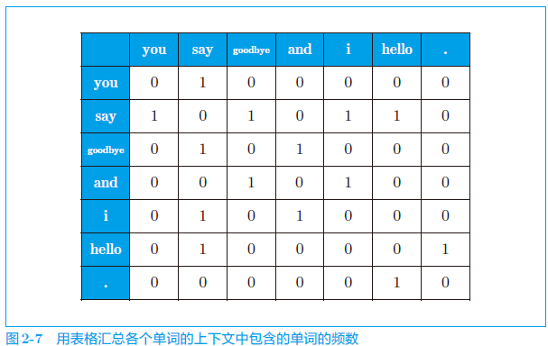
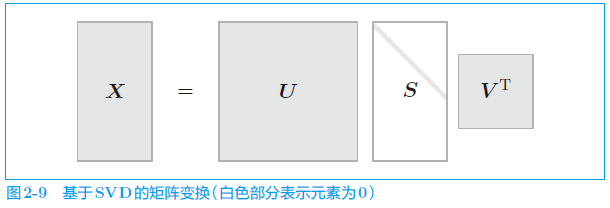
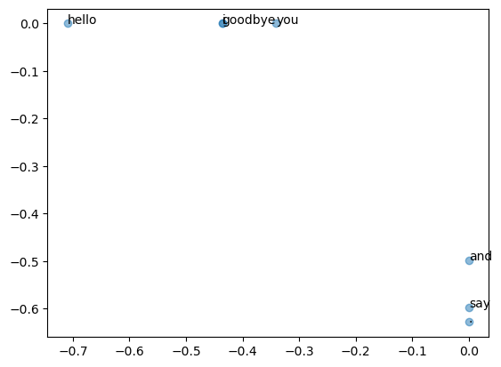

正文
2.1 什么是自然语言处理
让计算机理解单词含义，单词含义的表示方法：
-
基于同义词词典的方法
-
基于计数的方法
-
基于推理的方法（word2vec）
2.2 同义词词典
在同义词词典中，具有相同含义的单词（同义词）或含义类似的单词（近义词）被归类到同一个组中。
在自然语言处理中用到的同义词词典有时会定义单词之间的粒度更细的关系，比如“上位-下位”关系、“整体-部分”关系。
2.2.1 WordNet
WordNet 是普林斯顿大学于 1985 年开始开发的同义词词典，迄今已用于许多研究，并活跃于各种自然语言处理应用中。
2.2.2 同义词词典的问题
-
难以顺应时代变化
-
人力成本高
-
无法表示单词的微妙差异
2.3 基于计数的方法
语料库中包含了大量的关于自然语言的实践知识，即文章的写作方法、单词的选择方法和单词含义等。基于计数的方法的目标就是从这些富有实践知识的语料库中，自动且高效地提取本质。
2.3.1 基于 Python 的语料库的预处理
将文本分割为单词（分词），并将分割后的单词列表转化为单词 ID 列表。
text = 'You say goodbye and I say hello.'
text = text.lower()
text = text.replace('.', ' .')
text'you say goodbye and i say hello .'
words = text.split(' ')
words['you', 'say', 'goodbye', 'and', 'i', 'say', 'hello', '.']
给单词标上 ID，以便使用单词 ID 列表：
word_to_id = {}
id_to_word = {}
for word in words:
if word not in word_to_id:
new_id = len(word_to_id)
word_to_id[word] = new_id
id_to_word[new_id] = wordid_to_word{0: 'you', 1: 'say', 2: 'goodbye', 3: 'and', 4: 'i', 5: 'hello', 6: '.'}
word_to_id{'you': 0, 'say': 1, 'goodbye': 2, 'and': 3, 'i': 4, 'hello': 5, '.': 6}
根据单词 ID 检索单词：
id_to_word[1]'say'
根据单词检索单词 ID：
word_to_id['hello']5
将单词列表转化为单词 ID 列表：
import numpy as np
corpus = [word_to_id[w] for w in words]
corpus = np.array(corpus)
corpusarray([0, 1, 2, 3, 4, 1, 5, 6])
def preprocess(text):
text = text.lower()
text = text.replace('.', ' .')
words = text.split(' ')
word_to_id = {}
id_to_word = {}
for word in words:
if word not in word_to_id:
new_id = len(word_to_id)
word_to_id[word] = new_id
id_to_word[new_id] = word
corpus = np.array([word_to_id[w] for w in words])
return corpus, word_to_id, id_to_word使用这个函数，可以按如下方式对语料库进行预处理：
text = 'You say goodbye and I say hello.'
"""
corpus 是单词 ID 列表，word_to_id 是单词到单词 ID 的字典，id_to_word 是单词 ID 到单词的字典。
"""
corpus, word_to_id, id_to_word = preprocess(text)2.3.2 单词的分布式表示
在单词领域构建紧凑合理的向量表示。在自然语言处理领域，这称为分布式表示。
2.3.3 分布式假设
“某个单词的含义由它周围的单词形成”，称为分布式假设（distributional hypothesis）。
这里，我们将上下文的大小（即周围的单词有多少个）称为窗口大小（window size）。
2.3.4 共现矩阵
在关注某个单词的情况下，对它的周围出现了多少次什么单词进行计数，然后再汇总。这里，我们将这种做法称为“基于计数的方法”，在有的文献中也称为“基于统计的方法”。
import sys
sys.path.append('..')
import numpy as np
from common.util import preprocess
text = 'You say goodbye and I say hello.'
corpus, word_to_id, id_to_word = preprocess(text)corpusarray([0, 1, 2, 3, 4, 1, 5, 6])
id_to_word{0: 'you', 1: 'say', 2: 'goodbye', 3: 'and', 4: 'i', 5: 'hello', 6: '.'}
{kind=link}

C = np.array([
[0, 1, 0, 0, 0, 0, 0],
[1, 0, 1, 0, 1, 1, 0],
[0, 1, 0, 1, 0, 0, 0],
[0, 0, 1, 0, 1, 0, 0],
[0, 1, 0, 1, 0, 0, 0],
[0, 1, 0, 0, 0, 0, 1],
[0, 0, 0, 0, 0, 1, 0],
], dtype=np.int32)print(C[0]) # 单词 ID 为 0 的向量[0 1 0 0 0 0 0]
print(C[4]) # 单词 ID 为 4 的向量[0 1 0 1 0 0 0]
print(C[word_to_id['goodbye']]) # goodbye 的向量[0 1 0 1 0 0 0]
实现一个能直接从语料库生成共现矩阵的函数：
def create_co_matrix(corpus, vocab_size, window_size=1):
"""
直接从语料库生成共现矩阵
corpus: 单词 ID 列表
vocab_size: 词汇个数
window_size: 窗口大小
"""
corpus_size = len(corpus)
co_matrix = np.zeros((vocab_size, vocab_size), dtype=np.int32)
for idx, word_id in enumerate(corpus):
for i in range(1, window_size + 1):
left_idx = idx - i
right_idx = idx + i
if left_idx >= 0:
left_word_id = corpus[left_idx]
co_matrix[word_id, left_word_id] += 1
if right_idx < corpus_size:
right_word_id = corpus[right_idx]
co_matrix[word_id, right_word_id] += 1
return co_matrix2.3.5 向量间的相似度
余弦相似度（cosine similarity）。设有 和 两个向量，它们之间的余弦相似度定义如下：
def cos_similarity(x, y):
nx = x / np.sqrt(np.sum(x ** 2)) # x 的正规化
ny = y / np.sqrt(np.sum(y ** 2)) # y 的正规化
return np.dot(nx, ny)这里当零向量（元素全部为 0 的向量）被赋值给参数时，会出现“除数为 0”（zero division）的错误。
通过参数指定一个微小值 eps（eps 是 epsilon 的缩写），并默认 eps=1e-8（= 0.000 000 01）以防止“除数为 0”的错误。
def cos_similarity(x, y, eps=1e-8):
nx = x / (np.sqrt(np.sum(x ** 2)) + eps)
ny = y / (np.sqrt(np.sum(y ** 2)) + eps)
return np.dot(nx, ny)求 you 和 i（= I）的相似度：
import sys
sys.path.append('..')
from common.util import preprocess, create_co_matrix, cos_similarity
text = 'You say goodbye and I say hello.'
corpus, word_to_id, id_to_word = preprocess(text)
vocab_size = len(word_to_id)
C = create_co_matrix(corpus, vocab_size)
c0 = C[word_to_id['you']] # you 的单词向量
c1 = C[word_to_id['i']] # i 的单词向量
print(cos_similarity(c0, c1))0.7071067691154799
2.3.6 相似单词的排序
def most_similar(query, word_to_id, id_to_word, word_matrix, top=5):
"""
当某个单词被作为查询词时，将与这个查询词相似的单词按降序显示出来。
"""
# 1. 取出查询词
if query not in word_to_id:
print('%s is not found' % query)
return
print('\n[query] ' + query)
query_id = word_to_id[query]
query_vec = word_matrix[query_id]
# 2. 计算余弦相似度
vocab_size = len(id_to_word)
similarity = np.zeros(vocab_size)
for i in range(vocab_size):
similarity[i] = cos_similarity(word_matrix[i], query_vec)
# 3. 基于余弦相似度，按降序输出值
count = 0
# argsort() 方法可以按升序对 NumPy 数组的元素进行排序（不过，返回值是数组的索引）
for i in (-1 * similarity).argsort():
if id_to_word[i] == query:
continue
print(' %s: %s' % (id_to_word[i], similarity[i]))
count += 1
if count >= top:
return试着使用一下。这里将 you 作为查询词，显示与其相似的单词。
import sys
sys.path.append('..')
from common.util import preprocess, create_co_matrix, most_similar
text = 'You say goodbye and I say hello.'
corpus, word_to_id, id_to_word = preprocess(text)
vocab_size = len(word_to_id)
C = create_co_matrix(corpus, vocab_size)
most_similar('you', word_to_id, id_to_word, C, top=5)[query] you
goodbye: 0.7071067691154799
i: 0.7071067691154799
hello: 0.7071067691154799
say: 0.0
and: 0.0
2.4 基于计数的方法的改进
2.4.1 点互信息
如果只看单词的出现次数，那么与 drive 相比，the 和 car 的相关性更强。这意味着，仅仅因为 the 是个常用词，它就被认为与 car 有很强的相关性。
点互消息（Pointwise Mutual Information, PMI）。对于随机变量 和 ，它们的 PMI 定义如下：
表示 发生的概率， 表示 发生的概率， 表示 和 同时发生的概率。PMI 的值越高，表明相关性越强。
在自然语言的例子中， 就是指单词 在语料库中出现的概率。假设某个语料库中有 10 000 个单词，其中单词 the 出现了 100 次，则 另外， 表示单词 和 同时出现的概率。假设 the 和 car 一起出现了 10 次，则。
共现矩阵表示为 ，将单词 和 的共现次数表示为 ，将单词 和 的出现次数分别表示为 、，将语料库的单词数量记为 ，则：
在使用 PMI 的情况下，与 the 相比，drive 和 car 具有更强的相关性。这是我们想要的结果。之所以出现这个结果，是因为我们考虑了单词单独出现的次数。在这个例子中，因为 the 本身出现得多，所以 PMI 的得分被拉低了。式中的“≈”（near equal）表示近似相等的意思。
PMI 的问题：当两个单词的共现次数为 0 时，。为了解决这个问题，实践上我们会使用下述正的点互信息（Positive PMI，PPMI）。
PMI 是负数时，将其视为 0，这样就可以将单词间的相关性表示为大于等于 0 的实数。
def ppmi(C, verbose=False, eps=1e-8):
"""
erbose: 决定是否输出运行情况的标志。
当处理大语料库时，设置 verbose=True，可以用于确认运行情况
为了防止 np.log2(0)=-inf 而使用了微小值 eps
"""
M = np.zeros_like(C, dtype=np.float32)
N = np.sum(C)
S = np.sum(C, axis=0)
total = C.shape[0] * C.shape[1]
cnt = 0
for i in range(C.shape[0]):
for j in range(C.shape[1]):
pmi = np.log2(C[i, j] * N / (S[j]*S[i]) + eps)
M[i, j] = max(0, pmi)
if verbose:
cnt += 1
if cnt % (total//100+1) == 0:
print('%.1f%% done' % (100*cnt/total))
return M将共现矩阵转化为 PPMI 矩阵：
import sys
sys.path.append('..')
import numpy as np
from common.util import preprocess, create_co_matrix, cos_similarity, ppmi
text = 'You say goodbye and I say hello.'
corpus, word_to_id, id_to_word = preprocess(text)
vocab_size = len(word_to_id)
C = create_co_matrix(corpus, vocab_size)
W = ppmi(C)
np.set_printoptions(precision=3) # 有效位数为 3 位
print('covariance matrix')
print(C)
print('-'*50)
print('PPMI')
print(W)covariance matrix
[[0 1 0 0 0 0 0]
[1 0 1 0 1 1 0]
[0 1 0 1 0 0 0]
[0 0 1 0 1 0 0]
[0 1 0 1 0 0 0]
[0 1 0 0 0 0 1]
[0 0 0 0 0 1 0]]
--------------------------------------------------
PPMI
[[0. 1.807 0. 0. 0. 0. 0. ]
[1.807 0. 0.807 0. 0.807 0.807 0. ]
[0. 0.807 0. 1.807 0. 0. 0. ]
[0. 0. 1.807 0. 1.807 0. 0. ]
[0. 0.807 0. 1.807 0. 0. 0. ]
[0. 0.807 0. 0. 0. 0. 2.807]
[0. 0. 0. 0. 0. 2.807 0. ]]
PPMI 矩阵的问题：随着语料库的词汇量增加，各个单词向量的维数也会增加。
2.4.2 降维
在尽量保留“重要信息”的基础上减少向量维度。
{kind=link}

奇异值分解(Singular Value Decomposition，SVD)。SVD 将任意矩阵分解为 3 个矩阵的乘积：
SVD 将任意的矩阵 分解为 这 3 个矩阵的乘积，其中 和 是列向量彼此正交的正交矩阵， 是除了对角线元素以外其余元素均为 0 的对角矩阵。
2.4.3 基于 SVD 的降维
import sys
sys.path.append('..')
import numpy as np
import matplotlib.pyplot as plt
from common.util import preprocess, create_co_matrix, ppmi
text = 'You say goodbye and I say hello.'
corpus, word_to_id, id_to_word = preprocess(text)
vocab_size = len(id_to_word)
C = create_co_matrix(corpus, vocab_size, window_size=1)
W = ppmi(C)
# SVD
U, S, V = np.linalg.svd(W)print(C[0]) # 共现矩阵[0 1 0 0 0 0 0]
print(W[0]) # PPMI 矩阵[0. 1.807 0. 0. 0. 0. 0. ]
print(U[0]) # SVD[-3.409e-01 -1.110e-16 -3.886e-16 -1.205e-01 0.000e+00 9.323e-01
2.226e-16]
原先的稀疏向量 经过 SVD 被转化成了密集向量
for word, word_id in word_to_id.items():
plt.annotate(word, (U[word_id, 0], U[word_id, 1]))
plt.scatter(U[:,0], U[:,1], alpha=0.5)
plt.show() 
{kind=link}
goodbye 和hello、you 和 i 位置接近，这是比较符合我们的直觉的。
如果矩阵大小是 N，SVD 的计算的复杂度将达到 O(N3)。这意味着 SVD 需要与 N 的立方成比例的计算量。因为现实中这样的计算量是做不到的，所以往往会使用 Truncated SVD 等更快的方法。
2.4.4 PTB 数据集
我们使用的 PTB 语料库在 word2vec 的发明者托马斯· 米科洛夫（Tomas Mikolov）的网页上有提供。这个 PTB 语料库是以文本文件的形式提供的，与原始的 PTB 的文章相比，多了若干预处理，包括将稀有单词替换成特殊字符
PTB 下载地址：http://www.fit.vutbr.cz/~imikolov/rnnlm/simple-examples.tgz
import sys
sys.path.append('..')
from dataset import ptb
corpus, word_to_id, id_to_word = ptb.load_data('train')
print('corpus size:', len(corpus))
print('corpus[:30]:', corpus[:30])
print()
print('id_to_word[0]:', id_to_word[0])
print('id_to_word[1]:', id_to_word[1])
print('id_to_word[2]:', id_to_word[2])
print()
print("word_to_id['car']:", word_to_id['car'])
print("word_to_id['happy']:", word_to_id['happy'])
print("word_to_id['lexus']:", word_to_id['lexus'])corpus size: 929589
corpus[:30]: [ 0 1 2 3 4 5 6 7 8 9 10 11 12 13 14 15 16 17 18 19 20 21 22 23
24 25 26 27 28 29]
id_to_word[0]: aer
id_to_word[1]: banknote
id_to_word[2]: berlitz
word_to_id['car']: 3856
word_to_id['happy']: 4428
word_to_id['lexus']: 7426
2.4.5 基于 PTB 数据集的评价
这里建议使用更快速的 SVD 对大矩阵执行 SVD，为此我们需要安装 sklearn 模块。当然，虽然仍可以使用基本版的 SVD（np.linalg.svd()），但是这需要更多的时间和内存。
import sys
sys.path.append('..')
import numpy as np
from common.util import most_similar, create_co_matrix, ppmi
from dataset import ptb
window_size = 2
wordvec_size = 100
corpus, word_to_id, id_to_word = ptb.load_data('train')
vocab_size = len(word_to_id)
print('counting co-occurrence ...')
C = create_co_matrix(corpus, vocab_size, window_size)
print('calculating PPMI ...')
W = ppmi(C, verbose=True)
print('calculating SVD ...')
try:
# truncated SVD (fast!)
from sklearn.utils.extmath import randomized_svd
U, S, V = randomized_svd(W, n_components=wordvec_size, n_iter=5, random_state=None)
excerpt ImportError:
# SVD (slow)
U, S, V = np.linalg.svd(W)
word_vecs = U[:, :wordvec_size]
querys = ['you', 'year', 'car', 'toyota']
for query in querys:
most_similar(query, word_to_id, id_to_word, word_vecs, top=5)counting co-occurrence ...
calculating PPMI ...
C:\Users\gzjzx\Jupyter\DL_Advanced\..\common\util.py:139: RuntimeWarning: overflow encountered in long_scalars
pmi = np.log2(C[i, j] * N / (S[j]*S[i]) + eps)
C:\Users\gzjzx\Jupyter\DL_Advanced\..\common\util.py:139: RuntimeWarning: invalid value encountered in log2
pmi = np.log2(C[i, j] * N / (S[j]*S[i]) + eps)
1.0% done
2.0% done
3.0% done
4.0% done
5.0% done
6.0% done
7.0% done
8.0% done
9.0% done
10.0% done
11.0% done
12.0% done
13.0% done
14.0% done
15.0% done
16.0% done
17.0% done
18.0% done
19.0% done
20.0% done
21.0% done
22.0% done
23.0% done
24.0% done
25.0% done
26.0% done
27.0% done
28.0% done
29.0% done
30.0% done
31.0% done
32.0% done
33.0% done
34.0% done
35.0% done
36.0% done
37.0% done
38.0% done
39.0% done
40.0% done
41.0% done
42.0% done
43.0% done
44.0% done
45.0% done
46.0% done
47.0% done
48.0% done
49.0% done
50.0% done
51.0% done
52.0% done
53.0% done
54.0% done
55.0% done
56.0% done
57.0% done
58.0% done
59.0% done
60.0% done
61.0% done
62.0% done
63.0% done
64.0% done
65.0% done
66.0% done
67.0% done
68.0% done
69.0% done
70.0% done
71.0% done
72.0% done
73.0% done
74.0% done
75.0% done
76.0% done
77.0% done
78.0% done
79.0% done
80.0% done
81.0% done
82.0% done
83.0% done
84.0% done
85.0% done
86.0% done
87.0% done
88.0% done
89.0% done
90.0% done
91.0% done
92.0% done
93.0% done
94.0% done
95.0% done
96.0% done
97.0% done
98.0% done
99.0% done
calculating SVD ...
[query] you
i: 0.6670734286308289
we: 0.6116090416908264
someone: 0.549290657043457
do: 0.5428591370582581
'll: 0.5290063619613647
[query] year
month: 0.6682149171829224
quarter: 0.6562734246253967
next: 0.6095362305641174
fiscal: 0.5867708921432495
earlier: 0.5734390616416931
[query] car
luxury: 0.6188714504241943
auto: 0.6056600213050842
corsica: 0.5616344809532166
domestic: 0.5556454062461853
cars: 0.521730363368988
[query] toyota
motor: 0.7244030237197876
motors: 0.6643518209457397
nissan: 0.6601378917694092
lexus: 0.6493816375732422
honda: 0.6213896870613098
成功地将单词含义编码成了向量，真是可喜可贺！使用语料库，计算上下文中的单词数量，将它们转化 PPMI 矩阵，再基于 SVD 降维获得好的单词向量。这就是单词的分布式表示，每个单词表示为固定长度的密集向量。
2.5 小结
-
使用 WordNet 等同义词词典，可以获取近义词或测量单词间的相似度等
-
使用同义词词典的方法存在创建词库需要大量人力、新词难更新等问题
-
目前，使用语料库对单词进行向量化是主流方法
-
近年来的单词向量化方法大多基于“单词含义由其周围的单词构成”这一分布式假设
-
在基于计数的方法中，对语料库中的每个单词周围的单词的出现频数进行计数并汇总（= 共现矩阵）
-
通过将共现矩阵转化为 PPMI 矩阵并降维，可以将大的稀疏向量转变为小的密集向量
-
在单词的向量空间中，含义上接近的单词距离上理应也更近